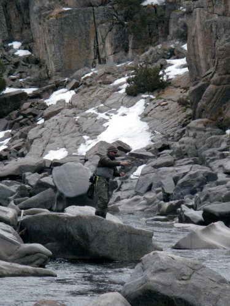
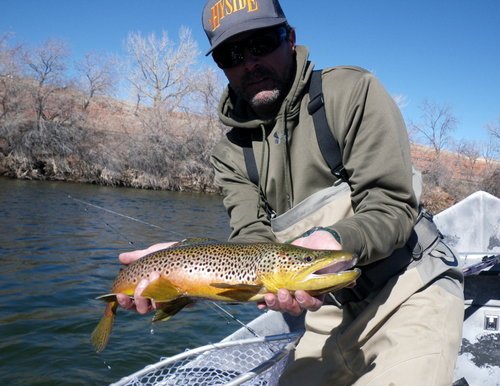

Welcome to farling.com
Grey Reef flushing flows
North Platte River flushing flow to run for 10 days CASPER – The Wyoming Game and Fish Department cautions sportsmen to be aware of sizeable increases in water flows in the North Platte River for 10 days beginning March 7 as part of a flushing flow project. Game and Fish has requested the flushing flow in order to maintain fish spawning habitats and to increase production of invertebrates that fish depend on for food. The Bureau of Reclamation will begin releasing additional water from Gray Reef Reservoir in the early morning hours beginning Monday, March 7. Flows will increase from approximately 500 cubic feet per second (cfs) to 4,000 cfs and will then gradually decrease back to 500 cfs each day, with the maximum flow occurring between 3-7 a.m. Flows from Gray Reef Dam will return to 500 cfs at 10 AM each day. The schedule will be repeated through March 16. The flows below Gray Reef Dam will then be stabilized at approximately 500 cfs following completion of the ten day cycle. This schedule may be modified due to river ice or technical difficulties. In recent years, flows were increased for 5 days each spring and occasionally repeated for another 5 days in the fall. However, the fall flush has been problematic in that it dislodges aquatic vegetation and moves it downstream, causing loss of vegetative cover and invertebrates in upstream reaches of the river. A 10-day flush in the spring may be better able to maintain high quality spawning habitat for trout while preserving important overwinter habitat and forage for juvenile trout. “Data show these flows are important to trout spawning and to the numbers of trout in the river,” said Matt Hahn, fisheries biologist for the Casper region. In the past, the trout population has fallen to less than 400 trout per mile, even with stocking. Since annual flushing flows began in 1995, the trout population averages over 3,500 per mile and annual stocking has been eliminated upstream of Casper. The Game and Fish Department advises sportsmen and recreationists to be aware of the potential dangers related to flushing flows. Because the flush will span the weekend, there is potential for more people to be wading or floating the river. Those using the river during the flushing flow should consider the fluctuating water levels and be aware that areas that can be waded effectively at 500 cfs may not be safe at 4,000 cfs. Flushing flows are normally scheduled for completion in March to maximize benefits for spawning rainbow trout.Bighorn flushing flows
CODY - The Wyoming Game and Fish Department cautions sportsmen and recreationists to be aware of sizeable increases in water flows in the Bighorn River March 21-22 as part of a flushing flow project. The Bureau of Reclamation will begin releasing additional water from Boysen Reservoir causing flows in the river below Boysen Dam to fluctuate from 600 cubic feet per second (cfs) to 5000 cfs. Beginning Monday, March 21 at 2 a.m., flows released from the dam will increase to 3000 cfs and further increased to 5000 cfs at approximately 7 a.m. Flows will remain at 5000 cfs for ten hours before being gradually reduced to 600 cfs by approximately 10 a.m. March 22. Game and Fish advises the public to be aware of the potential dangers related to flushing flows. Sportsmen wading or floating the river during this time should consider the fluctuating water levels. Areas that can be waded effectively at 600 cfs may not be accessible at 5000 cfs. The Wyoming Game and Fish Department has requested the flushing flow in order to clean fine sediments from fish spawning habitats and to increase production of invertebrates that fish depend on for food. Flushing flows have been a regular occurrence on the river since 2005 and have dramatically improved wild rainbow trout recruitment in the Bighorn River.Grey Reef and the Bighorn (Thermop)
Grey Reef = 500cfs and water temp = 40Bighorn = 860cfs and water temp = 42
Fremont = 78cfs and water temp = 40
Bighorn is low and clear. Despite the abundant midge hatch, fish still aren't looking up.
Caught some big fish, but I wouldn't come back this early in the Spring again.
The Reef and Fremont are fishing better, if you can take the wind.


Grey Reef and Fremont Canyon
Grey Reef = 500cfs and water temp = 38Fremont = 78cfs and water temp = 40
Fish mostly in the upper holes on the Reef.
Still Winter conditions (dredging), but fish are colored up and midges want to happen.


Winter Thaw
We're getting a Winter thaw, and it's feeling like Spring on the Front Range.Super Bowls over- Go Broncos!
Jacob finished the wrestling season strong w a 2nd place finish.
I exercised a bit of Spring Fever w a quick trip to Captiva Island.


Winter in Colorado
It's a legitimate Winter this year- snows been on the ground for months.
Here's a couple links to some recent Jake wrestling matches:
Jacob wrestling video 1
Jacob wrestling video 2
Welcome 2016!
Best wishes for the New Year!
It's shaping up to be a good snow year (knock on wood).
Photo is of Beth at Loveland.